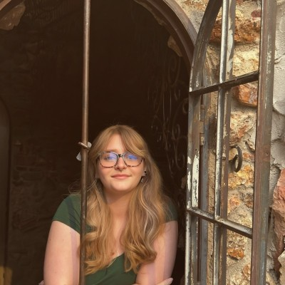
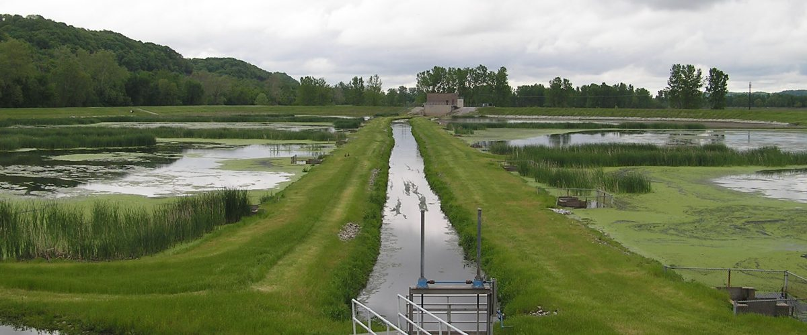
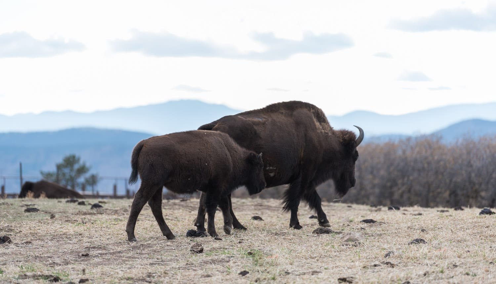

Available for new opportunities
maps, models, muddy boots
Environmental Science • GIS • Restoration
Brynley Reeves
Environmental scientist turning ecological and hydrologic data into practical, understandable solutions. My experience spans GIS, Python, water-resource modeling, field research, remote sensing, and restoration planning. I am especially drawn to work that connects strong science with real conservation needs.

Download Resume
View Projects
Based in Denver • Open to environmental science, GIS, restoration, and water-resource roles
Selected Projects
A selection of projects that show how I approach environmental problems: understand the system, work carefully with the data, and turn the results into something useful.
Equal parts analysis, curiosity, and staring at a map until it tells me what is wrong.

Colorado Reservoir Storage Modeling
ESIIL STARS Research Internship • University of Colorado Boulder • Summer 2026
Developed and evaluated regression models in Python to examine how streamflow, antecedent storage, snowpack, and climate variables influence reservoir storage across Colorado. I built reproducible workflows, compared model performance, created maps and figures, and helped communicate the results through a final research presentation.
PythonGISHydrologic ModelingStatistical Analysis

South Platte Treatment Wetland
MSU Denver • 2025
Designed a treatment wetland for a 2.3-acre site with a projected capacity of 175,000 gallons per day. I combined GIS, hydrology, and restoration planning to identify suitable wetland zones and develop a design focused on reducing sediment and nutrient loading.
ArcGISWater ResourcesSite AnalysisRestoration Design

Daniels Park Prairie Restoration
MSU Denver + Denver Zoo • 2025
Mapped more than three acres of degraded prairie to identify restoration priorities and erosion concerns. I also helped construct a rock dam designed to redirect trail runoff and support testing of a practical erosion-control strategy.
ArcGISPrairie EcologyErosion ControlField Work

Community Sustainability Outreach
Consumption Literacy Project • 2023
Supported environmental education, community outreach, and planning for community garden projects. This experience helped me learn how to make sustainability topics more approachable and connect environmental goals with the people they are meant to serve.
Environmental EducationCommunity EngagementSustainable Agriculture
Experience
ESIIL STARS Research Intern
Environmental Data Science Innovation & Inclusion Lab (ESIIL), University of Colorado Boulder • May 2026-July 2026
Collaborated with an interdisciplinary research team to analyze hydrologic and environmental datasets and investigate factors influencing reservoir storage across Colorado. I used Python, GIS, and statistical methods to integrate streamflow, storage, snowpack, and climate data, evaluate regression models, create visualizations, and present findings to researchers and peers.
Volunteer
Denver Zoo • October 2025-Present
Collect species-specific behavioral observations and create enrichment materials that support natural, stimulating behavior. The role has strengthened my attention to detail, consistency in data collection, and ability to contribute thoughtfully within an animal-care setting.
Barista
Starbucks • August 2024-July 2026
Balance speed, accuracy, teamwork, and customer service in a high-volume environment. Working while completing an accelerated degree path sharpened my time management, adaptability, and ability to stay calm when approximately everything is happening at once.
Team Member
Freddy’s Frozen Custard & Steakburgers • October 2021-August 2024
Built several years of experience in reliability, teamwork, training, and public-facing service. It was also where I first learned that being useful, communicative, and willing to step in matters just as much as having the official title.
About Me
I earned my B.S. in Environmental Science from Metropolitan State University of Denver in May 2026 after completing an A.S. in General Science while still in high school. That accelerated path gave me the chance to begin building research, field, and restoration experience early, but more importantly, it confirmed that I genuinely enjoy solving environmental problems. not just learning about them.
My work has included hydrologic modeling, GIS-based analysis, remote sensing, ecological restoration planning, behavioral observations, water-resource design, and community sustainability outreach. I am most engaged when I can take a complicated question, work through the science carefully, and present the result in a way that is clear and useful to other people.
I am especially interested in conservation, restoration ecology, water resources, GIS, and environmental research. I bring curiosity, strong follow-through, and a willingness to learn quickly. plus the practical communication and teamwork skills that come from balancing school, research, volunteering, leadership, and customer-facing work.
Technical Skills
ArcGIS
Python
Hydrologic Modeling
Regression Analysis
Remote Sensing
Environmental Data Analysis
Environmental Sampling
Data Visualization
Statistical Analysis
Restoration Planning
Behavioral Observation
35+
Years of Imagery Analyzed
175K
Gallons/Day Designed
2
College Degrees by 19
3+
Acres Mapped
Education
Metropolitan State University of Denver
B.S., Environmental Science • GPA 3.2 • May 2026
Coursework included ecosystem restoration, soil analysis, landscape ecology, climate change and ecosystems, water resources, GIS, chemistry, statistics, environmental policy, and environmental sampling.
Community College of Aurora
A.S., General Science • GPA 3.7 • May 2024
Leadership & Involvement
Environmental Science Club
Treasurer, 2025-Present
National Honor Society
Secretary, 2022-2024
Robotics Club
Business Funding Manager, 2023-2024
Download Full Resume